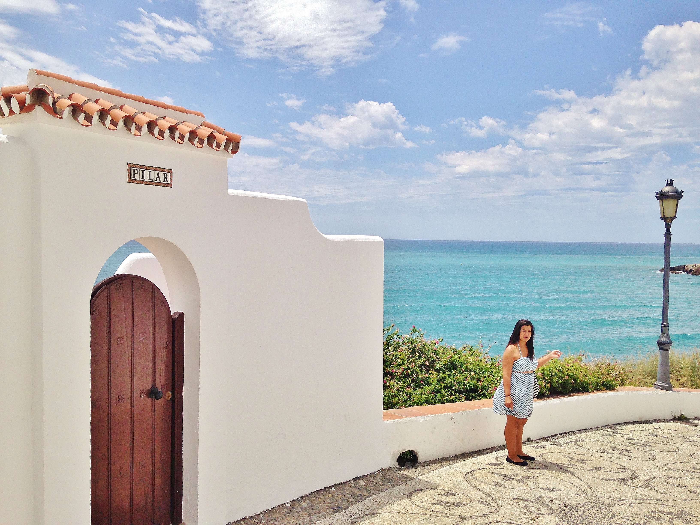
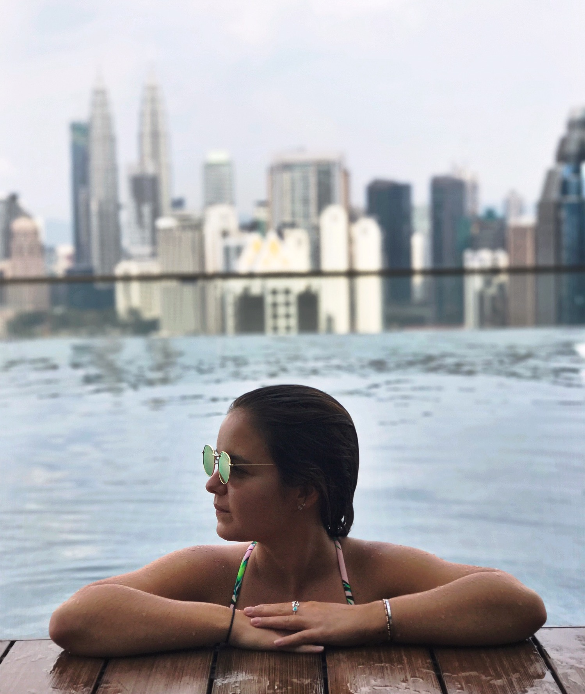
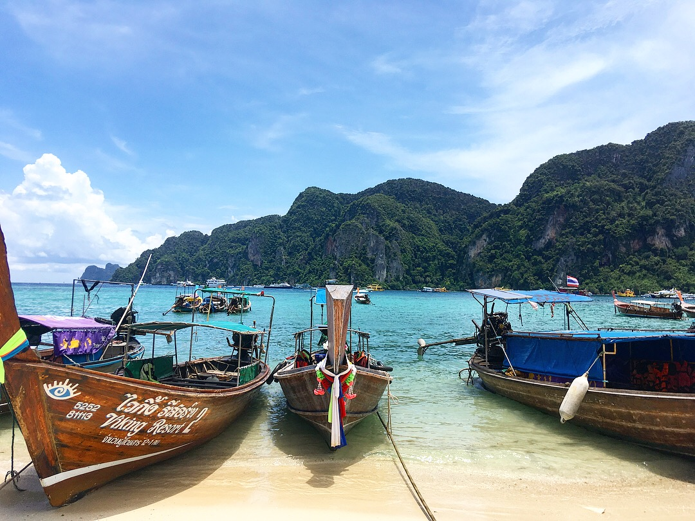
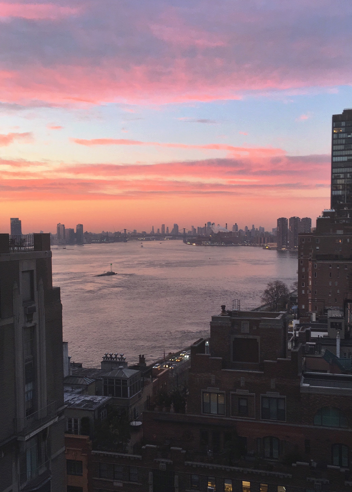
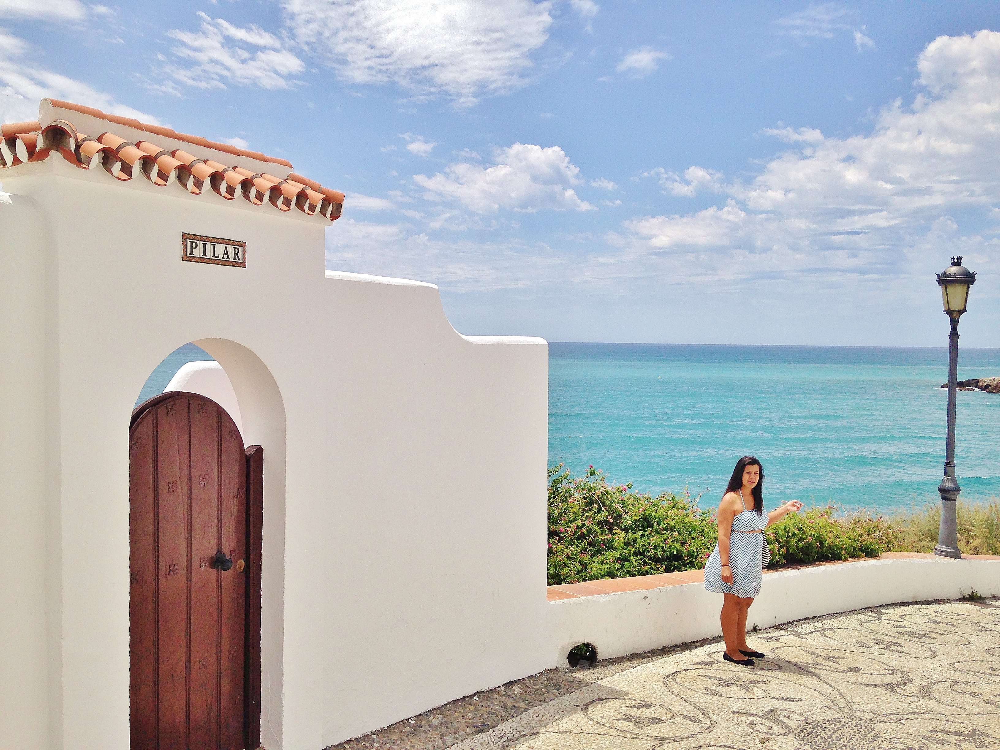
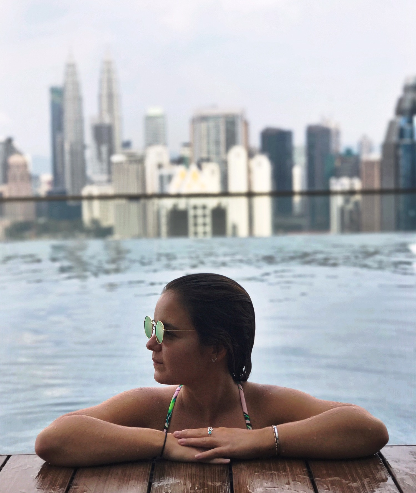
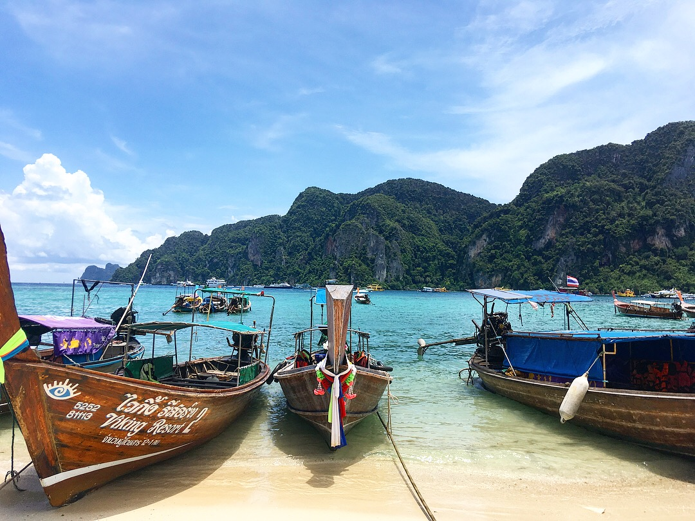
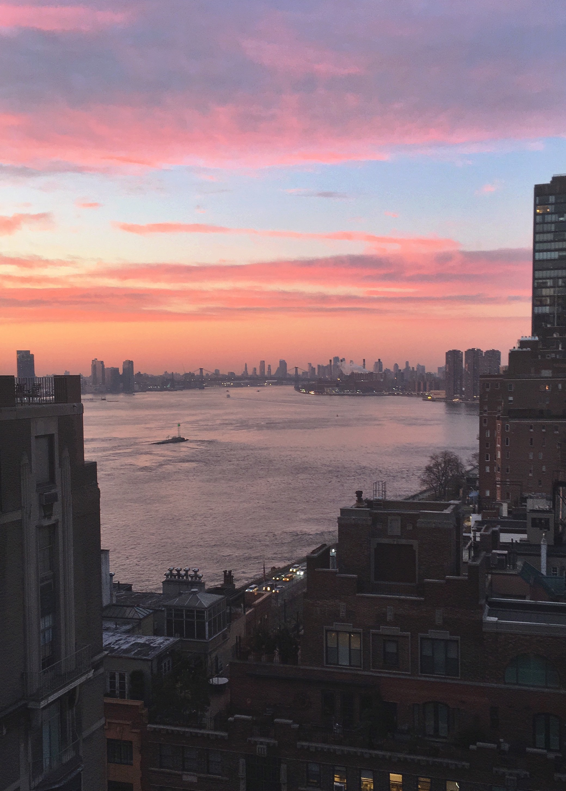

NYSTEC
New Ventures Consultant, IgniteU NY - Jan 2017-Nov 2017
Troy, NY
Project manage the five emerging trends showcases a year by developing event concept, marketing strategy and materials, outreach and project plan to hold a successful event for between 60-250 people – eg. Saratoga Go!, a civic tech competition, where secured $10K in monetary and in-kind sponsorship. Cultivate and develop key partnerships in the region between industry, academia, and state agencies- lead to securing $50K in private grant. Manage the key stakeholder relationships of 30 organizations and companies to continue engagement with IgniteU NY. Manage the IgniteU NY website, social media accounts, newsletter, email and documentation, increasing monthly subscribers

 






